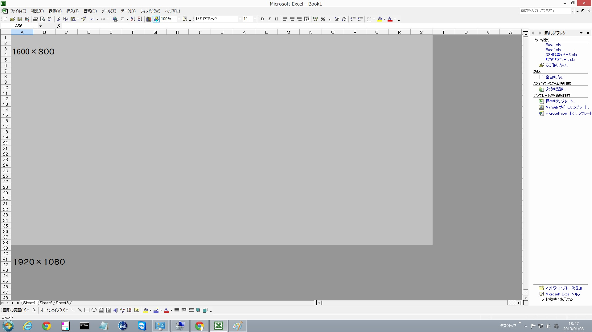

| TOP | weblog | TIPS | Works | リンク |
| 2013-01-07 17インチ液晶のノートPC選定してみた 調査してみて分かったのですが「１７インチ」ノートPCは売れていない（買う人が少ない）という事。 ターゲットはビジネスユースではありません、ホビーユース、特に３Ｄゲーマーが主な購入者のようです。 ３Dゲームや３D CAD以外ではｎVIDIAのビデオチップを必要としません、能力を発揮する場面が無いのです。 今お使いのオールドバージョンの２Ｄ ＣＡＤ（AutoCAD、VecterWorks）(*1)も同じことが言えます。 ヤマダ電機・堺本店には１７インチノートＰＣの展示はありませんでした。 パソコン工房に１７インチノートを見てきましたが、やはり相当デガイ印象があります、しかしながら、この辺は個人の感覚差があると思うので何とも言えません。 さて、液晶パネルのサイズの件も少し解説します、既にご存知でしたら読み飛ばしてください。 現在市場にある１７インチノートＰＣの最高解像度は 1920x1080 です。いわゆる「フルスペックＨＤ」です。 １５インチでも最高解像度が（1920x1080）の製品もあります。 下の図のExcelの画面ですが、薄いグレーが解像度 1600x800、濃いグレーが 1920ｘ1080です。 1600x800 では 横幅は「S」、縦は「38」まで表示できます。 1920x1080では横幅は「W」、縦は「48」まで表示できます。 解像度の違いはこのように表示できるエリアの広さが異なることであり、これを１７インチの影響ディスプレイで表示するか、１５インチのディスプレイで表示するかの違いです。 （クリックすると拡大します）  １５インチは当然ながら縮小率が高くなりますので文字やアイコン、表示するあらゆるオブジェクトが小さくなる（縮小される）ことになります、これは理解できますよね？ 携帯（持ち運び）を考えているのであれば同じ解像度で小さいサイズのノートの方が有利ではないかと考えましたが、これは購入するご本人の判断にお任せします。 (*1) 最新バージョンは別ですよ、AutoもVecterも３D機能の充実が売り文句になっています。 ハードウェア要求まで確認しませんでしたけどOpenGLかDirectX対応のビデオを推奨していると思います。 機種選定 最終的には自己責任で選定してくださいね。 選定のポイントは、価格、スペックは当たり前として、他のこだわりたい点は以下の通りなんだけどDELLしか調べられてません。（順不同です、すべてを満足するマシンはあり得ないから） ①発熱量、冷却用ファンが常に回っているか否か？（Ivy BridgeのCorei5の発熱は相当高いです） ②常時触る所（手を乗せるところとかキーボードのある一か所とか）熱くならないか否か？ ③BIOS、デバイスドライバがOS別、個別にキッチリ公開されていてダウンロード出来るか否か？ ④ハードディスクの交換が容易か？、自分で交換しても保障の範囲内か？ ⑤くだらないソフトが沢山添付されていない事 ⑥オフィス系ソフトやエンタメ系ソフトが付属している場合は個別にインストールが出来るか否か？ ⑦キーボードのタッチと配列は好みに合うか？ ①はＴＥＬ、②、⑦は実機で確認となりますので調べ切れてません。 ③、④、⑤、⑥は現在調査中です。 で、条件は以下のように設定しました。
（１７インチモデル） 選定は以下の３機種で価格はdell以外は価格.com １月７日時点、FULL HDのみ選定しています。 品薄だったりキャンペーン終了で価格の変動があるので注意してください。 ３機種ともオプションは無しです、保証も標準保証です。Officeもついていません。
*2：ＨＰはＤＶＤスーパーマルチです（オプション変更可能）、他はブルーレイスーパーマルチです。 *3：標準メモリが４ＧＢ×１なので、ここだけ８ＧＢ×１に変更しています。（価格は８ＭＢ） *4:ビデオチップは AMD Radeon HD 7650M メーカーサイト DELL Inspiron 17R Special Edition HP ENVY dv7-7200/CT SONY VAIO Eシリーズ17 SVE1712AJ レビュー DELLとHPのいっこ前と思われる機種のレビューを見つけました。 こうやって雑誌とかに取り上げられるのがDELLの強み、というか、売れる理由、特別他社と比べて吐出して良いわけではないのですが.... Inspiron 17R Special Edition レビュー HP Pavilion dv7-7000 レビュー（選定マシンのいっこ前の機種と思われます） DELLにチヤットで質問してみた ２回質問しました、２回目は最後ブチキレ気味、是非読んでみてね。 チャットでの質問 １回目 チャットでの質問 ２回目 （１５インチモデル） 選定は以下の３機種で価格は１月８日時点、FULL HDのみ選定しています。
*2：ASUS :GT620M 、 SONY：GT640M *3:ユニットコムは「パソコン工房」の法人名です、西宮店もあります。 スペックが違うだけで、他は一緒のマシンを展示しているかもしれません、問い合わせてみたらいかがでしょう。 メーカーサイト ASUS ZENBOOK UX32VD SONY VAIO Sシリーズ / SVS15129CJB ユニットコム Lesance NB 8-S5601 備考：Microsoft Office Personal 2010 アップグレード優待 Officeがバンドルされていない場合は、このパッケージが一番安い。 但し、本来なら正規のオールドバージョンOfficeがインストールされていないとダメだが、電話承認でインストール出来る模様、保証は出来ませんけど。 価格はアマゾンや価格.comで、だいたい１３,４００円j程度です。 Microsoft Office Personal 2010 アップグレード優待のインストール方法 どれにするか？ 分かりません！（笑） 特に品質に関しては全くの未知数です。 どこに重点を置くか？、持ち運びはどうするか？、自宅ではどこで使うか？、自分なりに考えて決めてください。 特に１７インチは大きくて、思いから、ペットボトルとかキャリーバックにいれてシミュレーションしてください。 本来なら実際に見て触って決めたいところですが、実際に見て触れる可能性があるのはSONYとユニットコムだけです。 他は通販オンリーですので触れませんし、見れません。 携帯性を重視するなら「ASUS ZENBOOK」で決まりでしょう、価格が上がりますがSSDも選べます。 WindowsXPですんなり動いている古いバージョンの2次元CAD（AutiCADとVecterWorks）をメインに考えた場合、 CPUがCorei5,7、ビデオがｎVIDIAは完全にオーバースペック、Celeron or Corei3、ビデオはCPUオンチップで十分だと思います。 余談、昔使っていたIBM ThinkPad T30はファンがオシャカになって使えなくなりました。 ディスクトップパソコンなら数千円で交換できるCPUファンです、 冷却用ファン、これ、結構重要だとおもいます、ていうか、これが壊れたから。 ノートＰＣのファンの構造ってバラさないと全然見えないんで壊れて初めて分かった事実なのですがＴ３０はＣＰＵファンと筐体内冷却ファンを共用て、下の写真のように結構立派な構造をしているのです。 ファンの左はヒートシンクで真下にＣＰＵがあります。 Ｔ３０の場合ファンは金属版で密閉されていて、空気の風をヒートシンクに直撃するように出来ていて、ヒートシンクも細い金属板で出来ていて、空気がその隙間を流れて筐体の外に出る、という仕組みになってました。
前置きが凄く長くなってしまったけど、高性能のＣＰＵやビデオチップは発熱が高いので冷却ファンが複数あって、常時回転していて、３Ｄゲームとか負荷の高いソフトを動かすとファンの回転数が急激に上がるノートＰＣもあるはず。 ですから、ノートＰＣの場合は高いスペックのＣＰＵ、ビデオチップを積んでいて、かつ安価なマシン、コストパフォーマンスが良いマシンがベストかというと、実はそうでもなかったりするわけです。 僕が使っている「Lenovo ThinkPad E520」なんて今の市場では最低ランクのスペックのマシンですけどメモリをトータル６ＧＢにしてWindows8Pro 64bit版で使っているけど、Windows8は７秒で起動します。 １分もすればサービスプログラムも殆ど立ち上がってストレスなしにブラウジングが出来るし、一般的にまあまあ思いとされる「Visual Studio 2012 Express + SQLServer2012」のアプリ開発もサクサク動作しますよ。 購入してからファンの回転音を聴いたのは１回のみ、筐体「熱い」と感じるか所がないです、殆ど無音。 CPUは左側にあるようですがキーボード右半分が薄っすらあったかく、裏面もハードディスクがある中央部分が薄っすらあったかいだけです。 |